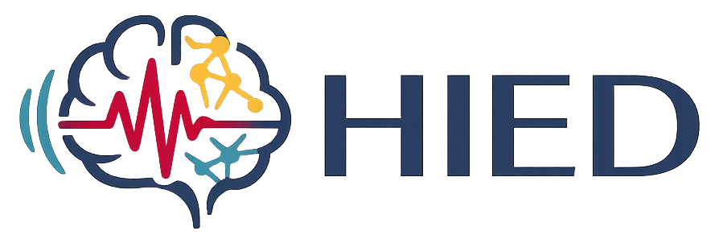
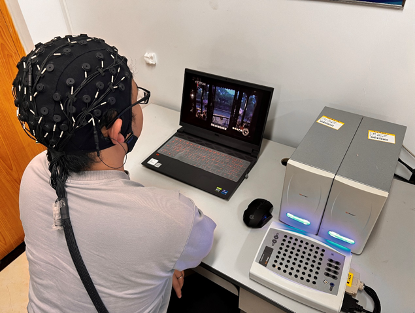
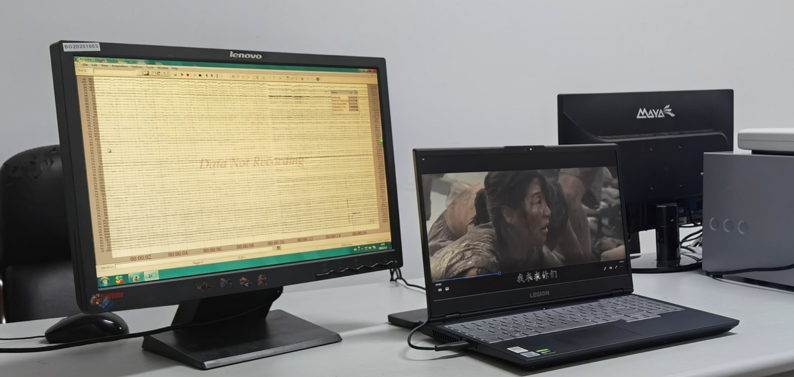

Preprocessed EEG Signals
Released trials provide 62-channel EEG time-series at 200 Hz, ready for custom feature extraction and modeling.

名听障被试
个预处理 MAT 文件
公开 EEG 通道
公开采样率
数据集规模
Released trials provide 62-channel EEG time-series at 200 Hz, ready for custom feature extraction and modeling.
Thirty Chinese-subtitled movie clips are balanced across six emotion categories, with five clips per class.
The release is organized by subject and trial so researchers can quickly script loading, preprocessing checks, and model experiments.
HIED 记录听障被试观看情绪电影片段时的 EEG 活动，覆盖快乐、激励、平静、愤怒、恐惧和悲伤六类情绪，用于面向听障人群的情绪识别研究。

数据包提供预处理后的 EEG 时序信号，不包含已提取特征。使用者提交已签署的 Word 许可协议并经审核后获取数据，可根据研究设计开展特征提取、建模与验证。

数据集包含 30 名听障学生被试，其中女性 12 名、男性 18 名，平均年龄 22 岁。
30 个带中文字幕的电影片段覆盖 6 类情绪，每类 5 个。片段时长范围为 182 s 至 373 s，平均时长 231.37 s。
EEG 使用 64 通道 Neuroscan SynAmps2 系统采集；公开文件包含预处理后的 62 通道 EEG 信号，采样率为 200 Hz。
数据按被试文件夹 S01 至 S30 组织。每个被试文件夹包含 30 个试次文件，命名为 s01.mat 至 s30.mat。
.mat 格式的预处理 EEG 时序数据；不包含特征提取结果。
HIED/S01-S30，共 30 个被试文件夹、900 个试次文件。
data、nbchan、srate 和 times；data 以通道 × 时间点形式存储。
HIED 使用 30 个带中文字幕的电影片段作为情绪刺激源，覆盖 6 类离散情绪，每类 5 个片段。片段编号、情绪标签、片名、开始时间和时长共同构成可复现实验刺激设计的基础信息。
movie clips
emotion categories
clips per emotion
average duration
| No. | Emotion | Movie title | Start time | Length |
|---|
EEG 信号预处理
预处理流程在特征提取前完成：EEG 信号降采样至 200 Hz，经 1-75 Hz 带通滤波和 49-51 Hz 工频抑制减少冗余与干扰，随后进行坏导插值、TP9/TP10 重参考和 ICA 伪迹去除，形成稳定的试次级 EEG 信号。
实验前通过手语支持向被试说明实验目的、流程与注意事项，被试签署知情同意书后参与 EEG 采集。
清洁头皮，按标准定位佩戴脑电帽，注入导电膏，并在正式记录前检查电极阻抗。
每个试次开始前呈现情绪提示，被试观看一个带中文字幕的电影片段，同时连续记录 EEG 信号。
每个片段结束后至少休息 15 s，随后约 1 min 完成情绪自评与实验记录。
原始 EEG 经降采样、滤波、重参考、坏道修复，并使用独立成分分析减少眼动、肌电、心电和环境噪声伪迹。
公开包提供试次级预处理 EEG 信号。研究者可根据自己的研究设计进行特征提取、建模与验证。
关联论文报告了 Shifted EEG Channel Transformer 方法。可申请获取的 HIED 数据包本身提供预处理 EEG 信号，不包含 PSD 或 DE 特征文件。
HIED 预处理 EEG 数据需要通过申请审核获取。请按使用语言下载中文或英文 Word 许可协议，填写使用者信息并签署后发送至指定邮箱。
IEEE Journal of Biomedical and Health Informatics · 2023
Zhongli Bai, Fazheng Hou, Kaixuan Sun, Qingzhou Wu, Mu Zhu, Zemin Mao, Yu Song, and Qiang Gao. IEEE Journal of Biomedical and Health Informatics, vol. 27, no. 10, pp. 4758-4767, 2023. DOI: 10.1109/JBHI.2023.3301993.
@article{bai2023sect,
title={SECT: A Method of Shifted EEG Channel Transformer for Emotion Recognition},
author={Bai, Zhongli and Hou, Fazheng and Sun, Kaixuan and Wu, Qingzhou and Zhu, Mu and Mao, Zemin and Song, Yu and Gao, Qiang},
journal={IEEE Journal of Biomedical and Health Informatics},
volume={27},
number={10},
pages={4758--4767},
year={2023},
doi={10.1109/JBHI.2023.3301993}
}